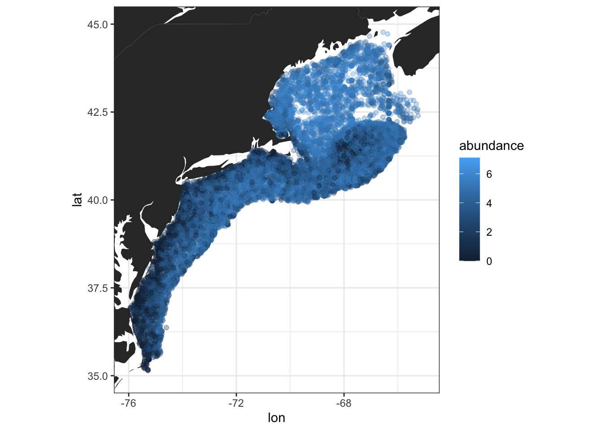
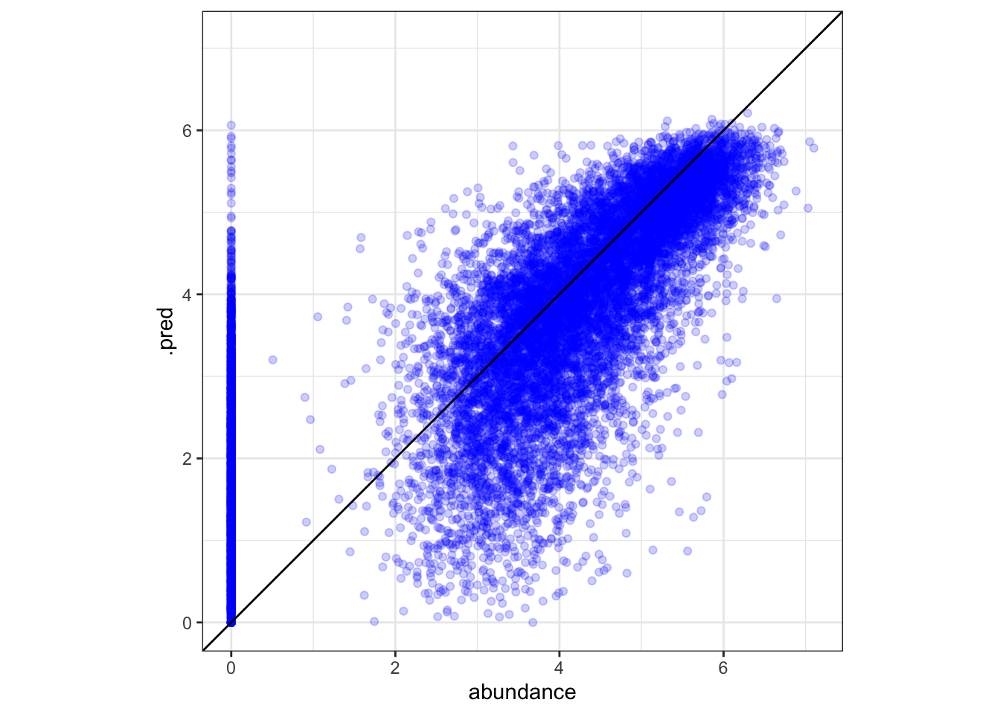
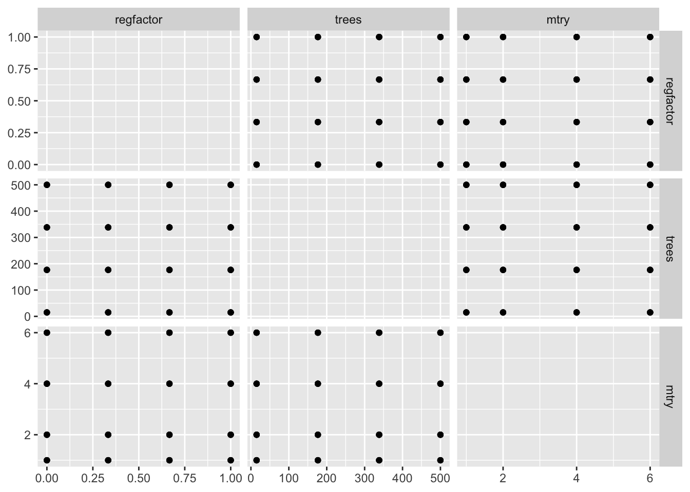
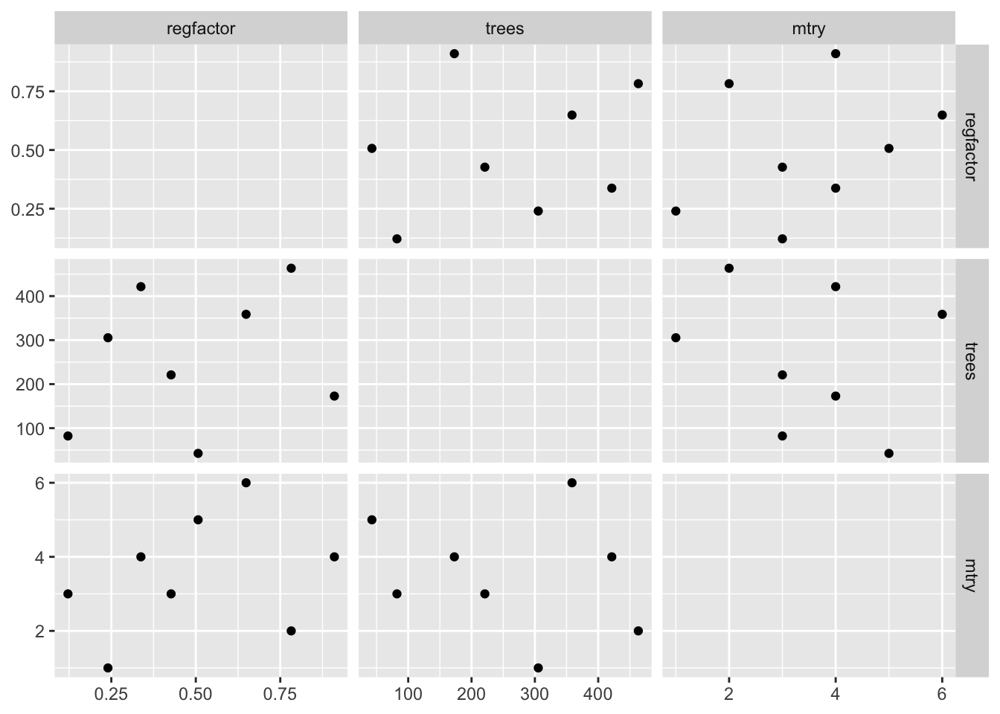
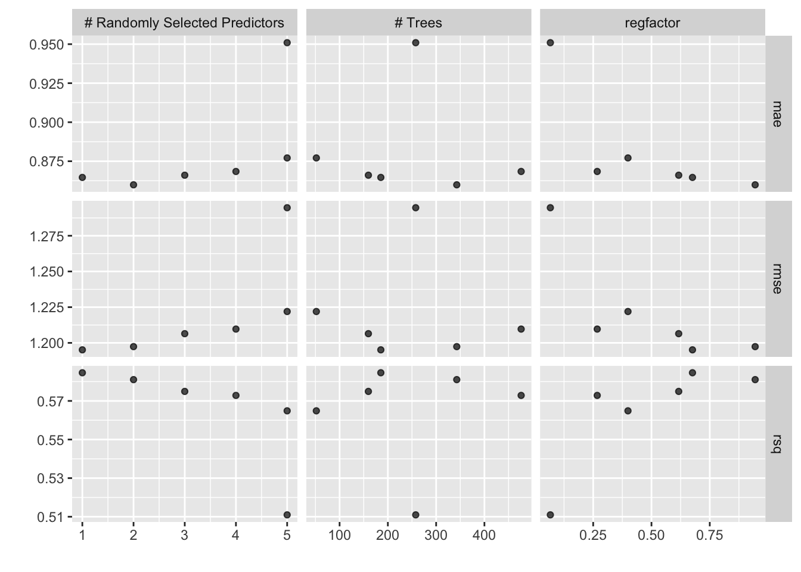
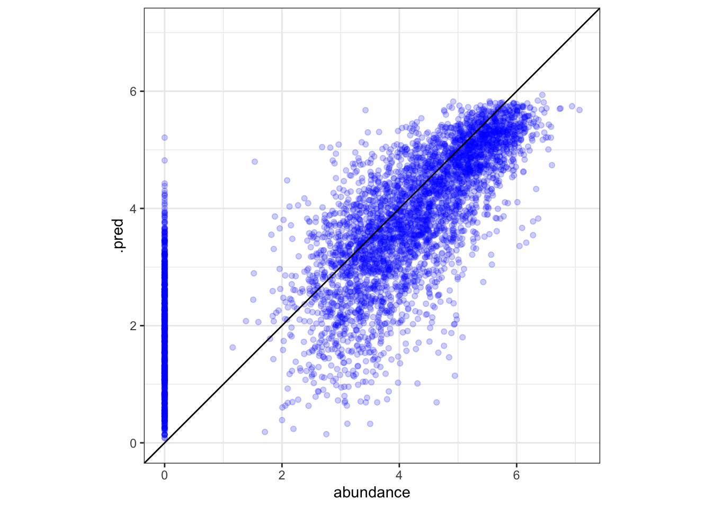

Models usually work poorly before they work well. Tune contains tools to assess model performance across resamples and tune model hyperparameters.
For this example, we’re going to model abundance of C. Finmarchicus, a small copepod that is abundant in the North Atlantic. This dataset is sourced from the Ecomon Survey and is also available to download on my GitHub.
augment() to work later on, and it’s best practice to transform outcome variables outside of a recipe.# omitting null values, acquiring year and month information, and selecting desired rows
cfin <- readr::read_csv("ecomon_data.csv.gz", col_types = readr::cols()) |>
na.omit() |>
mutate(month = lubridate::month(date) |> as.factor(),
year = lubridate::year(date),
abundance = log10(calfin_10m2 + 1)) |>
select(lat, lon, year, month, abundance, Bathy_depth, sfc_temp:btm_salt)
cfin## # A tibble: 17,795 × 10
## lat lon year month abundance Bathy_depth sfc_temp sfc_salt btm_temp btm_salt
## <dbl> <dbl> <dbl> <fct> <dbl> <dbl> <dbl> <dbl> <dbl> <dbl>
## 1 40.6 -71.4 1977 8 5.41 64.6 19.8 32.4 9.18 33.7
## 2 40.2 -69.4 1977 8 5.29 86.5 20.7 33.0 9.06 33.9
## 3 40.2 -68.8 1977 8 5.62 170. 19.2 32.9 10.2 34.9
## 4 40.5 -68.6 1977 8 5.79 86.7 18.3 32.5 8.57 33.4
## 5 41.1 -69.4 1977 8 4.61 42.1 9.8 32.3 8.71 32.4
## 6 40.8 -68.8 1977 8 4.96 68.6 12.9 32.7 11.7 32.8
## 7 40.9 -68.6 1977 8 4.39 56.2 12.4 32.6 12.4 32.7
## 8 40.8 -68.3 1977 8 5.18 51.1 14.1 32.6 11.8 32.7
## 9 40.6 -68.3 1977 8 5.92 80.4 18.7 32.5 9.15 32.9
## 10 41.1 -67.9 1977 8 4.70 49.1 13.2 32.6 13.1 32.6
## # … with 17,785 more rows# plotting the data
ggplot(cfin, aes(x = lon, y = lat)) +
geom_polygon(data = ggplot2::map_data("world"),
aes(long, lat, group = group)) +
geom_point(aes(col = abundance), alpha = .3) +
coord_quickmap(xlim = c(-76, -65),
ylim = c(35, 45),
expand = TRUE) +
theme_bw()
To learn more about creating resamples, go to the RSample Tutorial.
Tune contains tools to assess a model using resampling objects. To begin, lets build a simple random forest workflow for this data, along with a v-fold resampling object.
# splitting the data
set.seed(400)
cfin_split <- initial_split(cfin, prop = 3/4, strata = abundance)
cfin_train <- training(cfin_split)
# creating a resampling object
cfin_folds <- cfin_train |>
vfold_cv(v = 5, repeats = 1, strata = abundance)
# a simple recipe
simple_rec <- recipe(abundance ~ ., data = cfin_train) |>
update_role(lat, lon, year, new_role = "ID") |>
step_log(Bathy_depth, base = 10) |>
step_corr(threshold = .9) |>
step_normalize(all_numeric_predictors())
# a simple model
simple_rf <- rand_forest(mode = "regression",
trees = 20,
engine = "ranger")
# a simple workflow
simple_wkf <- workflow(preprocessor = simple_rec,
spec = simple_rf)Resamples are effective for assessing a model because they allow us to generate averaged estimates of performance. We can use fit_resamples() to fit a workflow to multiple resamples at once.
control argument of fit_resamples() allows you to control aspects of the resampling process. It accepts a control_resamples() object.# building a control object
cfin_control <- control_resamples(save_pred = TRUE, save_workflow = TRUE)
# fit_resamples works with both a workflow or separate preprocessor / model objects
cfin_fits <- fit_resamples(simple_wkf,
cfin_folds,
metrics = metric_set(rmse, rsq, mae), # metrics to evaluate
control = cfin_control)
cfin_fits## # Resampling results
## # 5-fold cross-validation using stratification
## # A tibble: 5 × 5
## splits id .metrics .notes .predictions
## <list> <chr> <list> <list> <list>
## 1 <split [10672/2672]> Fold1 <tibble [3 × 4]> <tibble [0 × 3]> <tibble [2,672 × 4]>
## 2 <split [10676/2668]> Fold2 <tibble [3 × 4]> <tibble [0 × 3]> <tibble [2,668 × 4]>
## 3 <split [10676/2668]> Fold3 <tibble [3 × 4]> <tibble [0 × 3]> <tibble [2,668 × 4]>
## 4 <split [10676/2668]> Fold4 <tibble [3 × 4]> <tibble [0 × 3]> <tibble [2,668 × 4]>
## 5 <split [10676/2668]> Fold5 <tibble [3 × 4]> <tibble [0 × 3]> <tibble [2,668 × 4]>Extract the computed metrics with the collect_metrics() method – one of several available collection methods.
cfin_fits |>
# summarize determines whether results are averaged or shown for each resample
collect_metrics(summarize = TRUE)## # A tibble: 3 × 6
## .metric .estimator mean n std_err .config
## <chr> <chr> <dbl> <int> <dbl> <chr>
## 1 mae standard 0.875 5 0.00492 Preprocessor1_Model1
## 2 rmse standard 1.22 5 0.00963 Preprocessor1_Model1
## 3 rsq standard 0.567 5 0.00438 Preprocessor1_Model1Use augment(<resample results>) to bind predicted values from resamples to the original data. If multiple resamples evaluated the same point, estimates are averaged.
aug <- augment(cfin_fits)
# plotting predictions vs. actual abundance
ggplot(aug, aes(x = abundance, y = .pred)) +
# adjusts x and y to have same bounds
tune::coord_obs_pred() +
theme_bw() +
geom_point(color = "blue", alpha = .2) +
geom_abline()
Although models and recipe steps estimate most of their parameters during training, some values must be specified by the user. These values are called hyperparameters, and a good model often hinges on good hyperparameters. Tune has an easy interface to optimize hyperparameters.
Note: When tuning hyperparameters, Tune works in conjunction with Dials, a tidymodels package designed specifically to provide infrastructure for tuning.
There are a variety of hyperparameters that are tunable:
threshold for step_other().min_n for a random forest model or hidden_units for a neural network.regularization.factor for the “ranger” engine of random forest.To determine tunable parameters for a model, recipe, or workflow, call tunable() on that object. tunable() won’t pick up engine-specific arguments.
tunable(simple_wkf)## # A tibble: 4 × 5
## name call_info source component component_id
## <chr> <list> <chr> <chr> <chr>
## 1 mtry <named list [2]> model_spec rand_forest main
## 2 trees <named list [2]> model_spec rand_forest main
## 3 min_n <named list [2]> model_spec rand_forest main
## 4 threshold <named list [2]> recipe step_corr corr_ybIHeTo mark a hyperparameter for tuning, pass tune() to the parameter. Multiple hyperparameters can be tuned at a time.
tune() to override the default naming scheme. This is most when multiple parameters of the same type are tuned.# No recipe steps are tuned in this example.
tune_recipe <- simple_rec
# Marking some parameters for tuning - note name override
tune_model <- rand_forest(trees = tune(), mtry = tune()) |>
set_mode("regression") |>
set_engine("ranger", regularization.factor = tune("regfactor"))
# combining into a workflow
tune_wkf <- workflow(preprocessor = tune_recipe,
spec = tune_model)
tune_wkf## ══ Workflow ═════════════════════════════════════════════════════════════════════════════════════════════════════════════════
## Preprocessor: Recipe
## Model: rand_forest()
##
## ── Preprocessor ─────────────────────────────────────────────────────────────────────────────────────────────────────────────
## 3 Recipe Steps
##
## • step_log()
## • step_corr()
## • step_normalize()
##
## ── Model ────────────────────────────────────────────────────────────────────────────────────────────────────────────────────
## Random Forest Model Specification (regression)
##
## Main Arguments:
## mtry = tune()
## trees = tune()
##
## Engine-Specific Arguments:
## regularization.factor = tune("regfactor")
##
## Computational engine: rangerUse extract_parameter_set_dials() and extract_parameter_dials() to extract information a marked parameter or parameters.
tune_params <- extract_parameter_set_dials(tune_wkf)
tune_params## Collection of 3 parameters for tuning
##
## identifier type object
## mtry mtry nparam[?]
## trees trees nparam[+]
## regfactor regularization.factor nparam[+]
##
## Model parameters needing finalization:
## # Randomly Selected Predictors ('mtry')
##
## See `?dials::finalize` or `?dials::update.parameters` for more information.#extracting a specific parameter by name
extract_parameter_dials(tune_wkf, "trees")## # Trees (quantitative)
## Range: [1, 2000]Each tunable parameter needs a range, representing the upper and lower limits of values to test while tuning. Ranges are automatically generated by Dials parameter objects that correspond to specific parameters. To update the testing range for parameters, use the update() method.
mtry) might require finalization because their range depends on the training dataset. These variables must be updated or the tuning process will fail. finalize() can update these parameters based on a dataset,, but this method is sensitive to recipe choices and not used here.# a dials::threshold() object was created when we first marked threshold for tuning
dials::trees()## # Trees (quantitative)
## Range: [1, 2000]# note that mtry is incomplete
dials::mtry()## # Randomly Selected Predictors (quantitative)
## Range: [1, ?]# updating the threshold - we only want to test 15 to 500 trees
tune_params <- tune_params |>
update(trees = threshold(c(15, 500)),
mtry = mtry(c(1, 6)))
extract_parameter_dials(tune_params, "trees")## Threshold (quantitative)
## Range: [15, 500]extract_parameter_dials(tune_params, "mtry")## # Randomly Selected Predictors (quantitative)
## Range: [1, 6]Once parameter ranges are specified, the next step is to determine what combinations of values yield the best results. One method to do this is through grid search: we create pre-determined sets of parameter values, train the model with them, and select the best one.
Tune also supports iterative search, where the results from one set of parameter values are used to choose the next one. Iterative search is not covered here: for more information, check out check out Tidy Modeling with R and the Dials Reference.Dials contains a four methods that turn provided parameter ranges into sets of testable values: grid_regular(), grid_random(), grid_max_entropy(), and grid_latin_hypercube().
# regularly span the available values
regular_tune <- grid_regular(tune_params, levels = 4)
# latin hypercube attempts to fill the parameter space in a semi-random way
latin_hypercube_tune <- grid_latin_hypercube(tune_params, size = 6)
# note the resulting dataframe, which contains combinations of parameter values
regular_tune## # A tibble: 64 × 3
## mtry trees regfactor
## <int> <dbl> <dbl>
## 1 1 15 0
## 2 2 15 0
## 3 4 15 0
## 4 6 15 0
## 5 1 177. 0
## 6 2 177. 0
## 7 4 177. 0
## 8 6 177. 0
## 9 1 338. 0
## 10 2 338. 0
## # … with 54 more rowsWe can plot these parameter sets to better understand how they span across the parameter space.
# helper function to plot gridded parameter specifications
plot_grid <- function(grid_obj) {
ggplot(grid_obj, aes(x = .panel_x, y = .panel_y)) +
geom_point() +
geom_blank() +
ggforce::facet_matrix(vars(regfactor, trees, mtry),
layer.diag = 2)
}
# points are regularly spaced across the grid
plot_grid(regular_tune)
# points are more randomly spaced
plot_grid(latin_hypercube_tune)
Finally, pass the tunable object, gridded parameter set, data, and desired metrics into the tune_grid() method to return a results table.
results <- tune_grid(tune_wkf,
cfin_folds, # using resamples for best performance estimates
grid = latin_hypercube_tune,
metrics = metric_set(rsq, rmse, mae))
results## # Tuning results
## # 5-fold cross-validation using stratification
## # A tibble: 5 × 4
## splits id .metrics .notes
## <list> <chr> <list> <list>
## 1 <split [10672/2672]> Fold1 <tibble [18 × 7]> <tibble [0 × 3]>
## 2 <split [10676/2668]> Fold2 <tibble [18 × 7]> <tibble [0 × 3]>
## 3 <split [10676/2668]> Fold3 <tibble [18 × 7]> <tibble [0 × 3]>
## 4 <split [10676/2668]> Fold4 <tibble [18 × 7]> <tibble [0 × 3]>
## 5 <split [10676/2668]> Fold5 <tibble [18 × 7]> <tibble [0 × 3]>Tune contains several ways to examine tuning results. The simplest, show_best(), will rank all the tuning results by a desired metric.
results |> show_best(metric = "rmse")## # A tibble: 5 × 9
## mtry trees regfactor .metric .estimator mean n std_err .config
## <int> <dbl> <dbl> <chr> <chr> <dbl> <int> <dbl> <chr>
## 1 1 185. 0.676 rmse standard 1.20 5 0.0101 Preprocessor1_Model5
## 2 2 343. 0.945 rmse standard 1.20 5 0.00994 Preprocessor1_Model1
## 3 3 160. 0.617 rmse standard 1.21 5 0.00991 Preprocessor1_Model6
## 4 4 476. 0.267 rmse standard 1.21 5 0.0104 Preprocessor1_Model4
## 5 5 51.9 0.399 rmse standard 1.22 5 0.0102 Preprocessor1_Model3Tune also has an autoplot() method that visualizes how parameters affect performance.
autoplot(results)
After examining results, update the model’s parameters either by passing them in manually or by calling finalize_workflow().
# using select_best to extract the best hyperparameter combination
lowest_rmse <- select_best(results, metric = "rmse")
# updating the workflow
# if tuning a model or recipe, use finalize_model or finalize_recipe.
tuned_wkf <- finalize_workflow(tune_wkf, lowest_rmse)
tune_wkf## ══ Workflow ═════════════════════════════════════════════════════════════════════════════════════════════════════════════════
## Preprocessor: Recipe
## Model: rand_forest()
##
## ── Preprocessor ─────────────────────────────────────────────────────────────────────────────────────────────────────────────
## 3 Recipe Steps
##
## • step_log()
## • step_corr()
## • step_normalize()
##
## ── Model ────────────────────────────────────────────────────────────────────────────────────────────────────────────────────
## Random Forest Model Specification (regression)
##
## Main Arguments:
## mtry = tune()
## trees = tune()
##
## Engine-Specific Arguments:
## regularization.factor = tune("regfactor")
##
## Computational engine: rangerFinally, run the finalized model on the entire training set and collect metrics. last_fit() compresses the testing/training process into a single method call.
# using last fit to collect results
final_results <- last_fit(tuned_wkf,
cfin_split) # initial_split object
final_results## # Resampling results
## # Manual resampling
## # A tibble: 1 × 6
## splits id .metrics .notes .predictions .workflow
## <list> <chr> <list> <list> <list> <list>
## 1 <split [13344/4451]> train/test split <tibble [2 × 4]> <tibble [0 × 3]> <tibble [4,451 × 4]> <workflow>collect_metrics(final_results) # final metrics for model## # A tibble: 2 × 4
## .metric .estimator .estimate .config
## <chr> <chr> <dbl> <chr>
## 1 rmse standard 1.17 Preprocessor1_Model1
## 2 rsq standard 0.593 Preprocessor1_Model1# plotting finalized model results using augment()
augment(final_results) |>
ggplot(aes(x = abundance, y = .pred)) +
tune::coord_obs_pred() +
theme_bw() +
geom_point(color = "blue", alpha = .2) +
geom_abline()